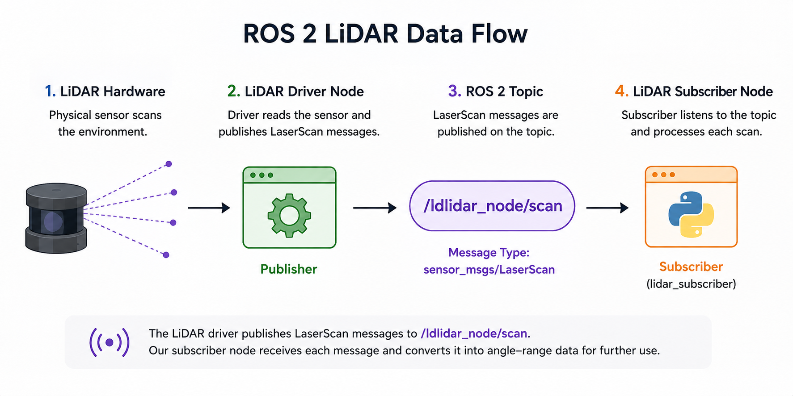
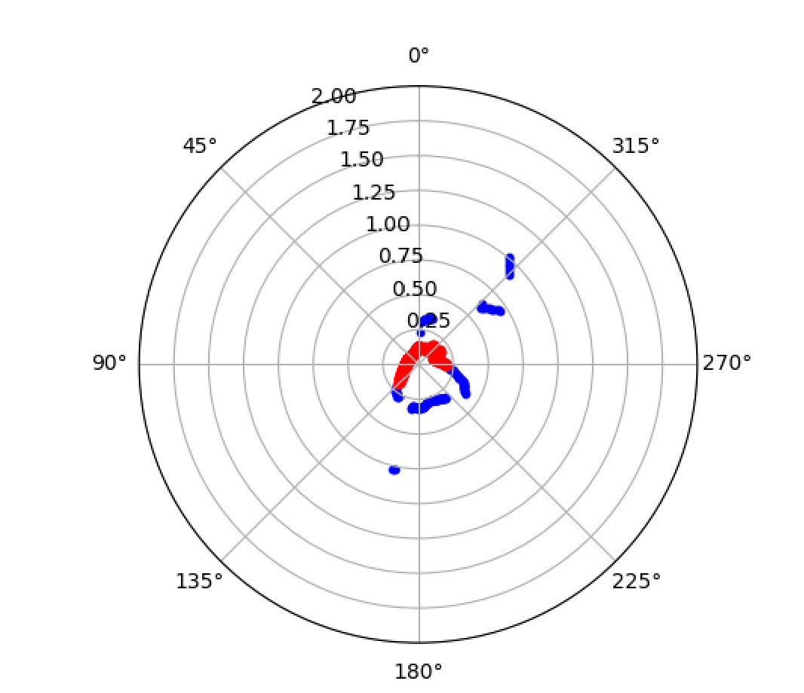

NASA Johnson Space Center Internship
NASA Robotics LiDAR Development and Integration to Robot 'Microchariot'
Engineering Objective
Develop a ROS2 LiDAR pipeline for reading data, recording it in CSV format, and detecting objects in proximity.
This modeule is intended to be integrated to MicroChariot's object avoidance protocol during its navigation.
LiDAR Publisher / Subscriber Architecture
ROS 2 organizes robotic systems into independent nodes that communicate
through named topics. The LiDAR driver publishes each scan as a
sensor_msgs/LaserScan message on
/ldlidar_node/scan.
I created a subscriber node that listens to this topic and processes each incoming scan. This separates the LiDAR hardware interface from the data-processing layer and allows the same sensor stream to be used by multiple ROS 2 nodes.

self.subscription = self.create_subscription(
LaserScan,
'/ldlidar_node/scan',
self.listener_callback,
10
)A LaserScan contains an ordered set of range measurements. The angle corresponding to each range is reconstructed from the starting angle and angular increment contained in the ROS message.
Invalid measurements such as infinity and NaN values are filtered out, leaving valid angle-range pairs for later visualization, mapping, or obstacle processing.
Lifecycle Control & LiDAR Data Logging
The LiDAR driver is managed as a ROS 2 lifecycle node. My script launches the driver, explicitly transitions it through configuration and activation, and then begins listening for scan data.
When the program exits, the process reverses those transitions and terminates the LiDAR launch process. This creates a controlled startup and shutdown sequence instead of leaving the sensor node running in an undefined state.

The lifecycle transitions allow the sensor driver to be initialized before data acquisition begins and cleanly stopped when the program exits.
lidar_proc = subprocess.Popen([
"ros2",
"launch",
"ldlidar_node",
"ldlidar.launch"
])
subprocess.run([
"ros2",
"lifecycle",
"set",
"/ldlidar_node",
"configure"
])
subprocess.run([
"ros2",
"lifecycle",
"set",
"/ldlidar_node",
"activate"
])Instead of storing only the newest scan, I maintain a rolling buffer of the 50 most recent LaserScan messages. Once the buffer reaches capacity, the oldest scan is automatically removed as a new one arrives.
scan_window = deque(maxlen=50)
...
scan_window.append(scan)
Each scan is converted into angle-range measurements and stored with
its scan index. The complete 50-scan window is rewritten to
reported_data.csv whenever a new scan arrives.
Both the LiDAR-native angle and a transformed plotting angle are saved, along with the measured range in meters. Invalid ranges are represented as empty CSV entries.
writer.writerow([
'scan_index',
'lidar_deg',
'plot_deg',
'range_m'
])
for idx, scan in enumerate(scan_window):
for lidar_deg, plot_deg, r in scan:
r_str = '' if r is None else f"{r:.3f}"
writer.writerow([
idx,
f"{lidar_deg:.2f}",
f"{plot_deg:.2f}",
r_str
])A SIGINT handler catches Ctrl+C and runs a common cleanup routine. The routine deactivates and shuts down the lifecycle node, terminates the launch process, and destroys the subscriber node.
subprocess.run([
"ros2",
"lifecycle",
"set",
"/ldlidar_node",
"deactivate"
])
subprocess.run([
"ros2",
"lifecycle",
"set",
"/ldlidar_node",
"shutdown"
])
lidar_proc.terminate()
node.destroy_node()
rclpy.shutdown()Logging Nearby Objects with a Proximity Radius
After collecting LiDAR scans, I used the range data to identify objects that entered a defined proximity radius around the robot.
Each beam is checked against a distance threshold. Measurements inside that radius are flagged and highlighted in the live polar visualization, providing a simple way to detect nearby obstacles in real time.
Each valid LiDAR range is compared against the proximity threshold. If the measured distance falls below 0.20 m, that beam is flagged as representing a nearby object.
PROXIMITY_THRESH = 0.2
ranges = np.array(msg.ranges, dtype=float)
valid = (
(ranges > 0.0)
& np.isfinite(ranges)
)
nearby = (
valid
& (ranges < PROXIMITY_THRESH)
)The visualization maintains a boolean flag for each LiDAR beam. Once a beam detects an object inside the proximity radius, that location remains highlighted while the nearby condition persists.
This makes close-range detections easier to track visually than relying on a single instantaneous scan.
below = (
valid
& (ranges < PROXIMITY_THRESH)
)
self.flagged = np.where(
below,
True,
self.flagged
)
flagged_theta = self.angles[self.flagged]
flagged_r = ranges[self.flagged]LiDAR measurements are plotted directly in polar coordinates. Normal scan points show the surrounding environment, while points inside the proximity radius are displayed separately as flagged detections.